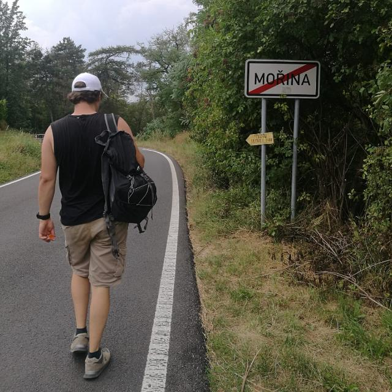

Profilo di Lorenzo Dentis

Dati personali
- Nome
- Lorenzo
- Cognome
- Dentis
- Sesso
- Maschio
- Indirizzo
- Via Roma 1, Torino
- Numero di Telefono
- 327327327
- Email
- lorenzo.dentis@edu.unito.it
Competenze informatiche
Programmazione
- Java
- C
- Python
- PHP
- HTML5 and CSS3
Sistemi ed amministrazione
- Ubuntu
- Arch
- Docker
- Raspbian
- Windows
Altro
- Information security & Pentesting
- Microcontroller
- Network administration
Esperienze Professionali
- Magazziniere (2016-2018)
- Impegno estivo tra giugno e settembre. anni 2016-2018
- Presso la ditta M&M
- Viaggio all'estero (2019)
- Trascorso l'anno 2019 in Estasia come studente
- A causa del visto di studio non mi era permesso lavorare
- Creatore della ditta BY (2020)
Interessi personali
- Arrampicata
- L'arrampicata (in inglese, climbing) può essere definita come la salita di un ostacolo, sia esso una parete rocciosa, naturale espressione e terreno preferito su cui l'arrampicata si è sviluppata in tutte le sue forme, sia esso un sasso, un pannello artificiale o una qualsiasi struttura urbana
- Trekking
- L'escursionismo è un'attività motoria e sportiva basata sul camminare nel territorio a scopo di studio o svago, lungo percorsi poco agevoli che tipicamente non possono essere percorsi con i mezzi di trasporto convenzionali (sentieri, sentieri a lunga percorrenza, alte vie, mulattiere, ippovie ecc.); spesso, derivando il termine dalla lingua inglese, viene indicato anche come trekking o hiking con il primo termine che deriva dal verbo inglese to trek, che significa camminare lentamente o anche fare un lungo viaggio, mentre il secondo deriva dal verbo inglese to hike, che significa camminare.
- Birra
- La birra è una bevanda alcolica ottenuta tipicamente dalla fermentazione di mosto a base di malto d'orzo, aromatizzata e amaricata con luppolo. Tra le più diffuse e più antiche bevande alcoliche del mondo, viene prodotta attraverso la fermentazione alcolica (con ceppi di lievito di Saccharomyces cerevisiae o Saccharomyces carlsbergensis) di zuccheri derivanti da fonti amidacee, la più usata delle quali è il malto d'orzo, ovvero l'orzo germinato ed essiccato, chiamato spesso semplicemente malto.